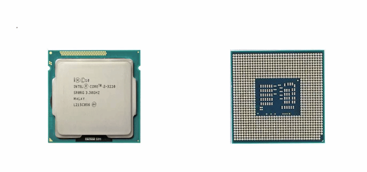

Assembly: 汇编语言的前世今生
- TAGS: Assembly
主要内容
- 16进制
- 用电表示数字
- 二进制加法机
- 寄存器
- 带寄存器的加法机
- 能做四则运算的机器
- 机器指令
- 内存和内存地址
- 练习1
- 字节
- 内存访问
- 存储器的分类
- 练习2
- 自动计算
- 处理器
- 汇编语言的产生
- 练习3
- 认识 8086 处理器
- 汇编语言和汇编软件
- 如何执行编译好的程序
进制
电子计算机，顾名思义，就是计算的机器。 因此，学习汇编语言，就不可避免地要和数字打交道。在这个过程中，我们要用到三种数制：十进制、二进制、十六进制。我们的目标是：
- 熟透后两种数制，了解这两种数制的计数特点
- 能够在这三种数制之间熟练地进行转换，特别是在看到一个二进制数时，能够口算出它对应的十六进制数，反之亦然。
- 对于 0~15 之间的任何一个十进制数，能够立即说出它对应的进制数和十六进制数。
进制也就是进位制，是人们规定的一种进位方法。 对于任何一种进制—X进制，就表示某一位置上的数运算时是逢X进一位。 十进制是逢十进一，十六进制是逢十六进一，二进制就是逢二进一，以此类推，x进制就是逢x进位。
二进制计数法
关于二进制计数法
二进制逢二进一，所有的数组是0、1组成
当前的计算机系统使用的基本上是二进制系统，它的基数为2， 数据在计算机中主要是
以补码的形式存储的 。
我们计算机也是一台机器，机器在做数学题是，也面临着一个如何表示数字的问题，比如你采用什么办法来将加数和被加数送到机器里。
答案是， 用高、低两种电平的组合来表示数字 。参与计算的数字通过电线送往计算机器，高电平被认为是“1”，低电平被认为是“0”，这样就形成了一个“0”和“1”组成的序列，如“11111010”，这就是一个二进制数，在数值上等于我们所熟知的十进制数 250。
从数学角度看，二进制计数法是现代主流计算机的基础。
- 简化了硬件设计，因为它只有两个符号“0”和“1”，要得到它们，用最少的电路元件来接通或者判断电路就行了。
- 二进制与十进制有着一对一的关系，任何一个十进制数都对应一个二进制，不管它有多大。
组成二进制数的每个数位，称为一个 比特(bit) ，而一个二进制数也可以看成一个比特串。很明显，它的数值越大，这个比特串说越长，这是二进制计数法不好的一面。
1、一个字节 = 8位（8个二进制位） 1Byte = 8bit； 2、一个十六进制 = 4个二进制位 3、一个字节 = 2个十六进制
口诀 ：
- 2^0=1=1b
- 2^1=2=10b
- 2^3=8=1000b
- 2^4=16=10000b
- 2^5=32=100000b
- 2^6=64=1000000b
- 2^7=128=10000000b
- 2^8=256=100000000b
- 2^9=512=1000000000b
- 2^10=1024=10000000000b
- 2^11=2048=100000000000b
- 2^12=4096=1000000000000b
8421法则 ： 将二进制的每一位数用相对就的 8、4、2、1 来表示，再通过“数字 ”相加就可以得到二进制数的数据
8 1000
4 100
2 10
1 1
1000
100
10
1
--------
1 1 1 1
1 位数：如果是该数本身
2 位数：如果都有值是2+1
3 位数：如果都有值是4+2+1
4 位数：如果有值是8+4+2+1
二进制到十进制转换
每种计数法都有自己的符号（数符）：
- 十进制：0、1、2、3、4、5、6、7、8、9
- 二进制：0、1
- 十六进制：0、1、2、3、4、5、6、7、8、9、a、b、c、d、e、f
这些 数字符号的个数称为基数 。也就是说十进制有 10 个基数，而二进制只有两个。
二进制和十都是进位计数法。进位计数法一个特点是，符号的值和它在这个数中所处的位置有关。
范例：十进制 365
\begin{equation*} 百位 3、十位 5、个位 6 = 3 \times 10^2 + 5 \times 10^1 + 6 \times 10^0 = 365 \end{equation*}
这就是说，由于所处位置不同，每个数位都有一个不同的放大倍数，这称为“ 权 ”。每个数位的权是这个计算的（仅讨论整数）： 从右往左开始，以基数为底，指数从 0 开始递增的幂 。
二进制转化为十进制
权值法：将2进制各个位数从0位开始乘以2的N次幂，将各个位数的结果相加。N代表位数
将上面的算式是把 十进制数“翻译”成十进制数。推广一下，将二进制数转换成十进制数。
范例： 10110001B
\begin{equation*} 10110001B = 1 \times 2^7 + 0 \times 2^6 + 1 \times 2^5 + 1 \times 2^4 + 0 \times 2^3 + 0 \times 2^2 + 0 \times 2^1 + 1 \times 2^0 = 177D \end{equation*}上面公式里，10110001B 中 B(Binary) 表示这是个二进制数，D(Decimal) 表示 177 是十进制数。
十进制到二进制的转换
除2反序取余法：用十进制数除以2，分别取余数和商数，商数为0的时候，将余数倒着数就是转化后的结果。
将它不停地除以二进制的基数 2，直到商为 0，然后将每一步得到的余数串连起来即可。
十进制的小数转换成二进制
小数部分和2相乘，取整数，不足1取0， 每次相乘都是小数部分 ，小数部分有几位就需几位。顺序看取整后的数就是转化后的结果。
如0.432只有3位，故只需3位。
- 乘的时候只乘小数部分
- 0.432 只有 3 位，故只需 3 位
- 0.432 的二进制数为：0.011
十六进制计数法
十六进制逢十六进一，所有的数组是0到9和A到F组成 字母不区分大小写
十六进制（英文名称：Hexadecimal），同我们日常生活中的表示法不一样，它由0-9，A-F组成， 字母不区分大小写 。与10进制的对应关系是：0-9对应0-9，A-F对应10-15。
十进制转化十六进制
除十六反序取余法: 用十进制数除以16，分别取余数和商数，商数为0的时候，将余数倒着数就是转化后的结果。
十六进制转化为十进制
权值法：
如 7 C 3
- 第 0 位： \(3 \times 16^0 = 3\)
- 第 1 位： \(12 \times 16^1 = 12 \times 16 = 192\)
- 第 2 位： \(7 \times 16^2 = 1792\)
- 1792 + 192 + 3 = 1987
十六进制的数和二进制数可以按位对应（ 十六进制一位对应二进制四位 ），因此常应用在计算机语言中。
0101 0111 1010 1011 0101 0111 1101 0111 000 5 7 A B 5 7 D 7 0
十六进制转二进制
A B 4 2 D 1010 1011 0100 0010 1101
8421法则： 将各个位数的二进制用十进制中的【数字 】来表示多位的二进制数 通过【数字 】相加就可以得到二进制数的数据
8 1000
4 100
2 10
1 1
1000
100
10
1
————
1 1 1 1
八进制
八进制逢八进一，所有的数组是0到7组成
八进制，Octal，缩写OCT或O，一种以8为基数的计数法，采用0，1，2，3，4，5，6，7八个数字，逢八进1。一些编程语言中常常以数字0开始表明该数字是八进制。
十进制转化八进制的方法 :
除八反序取余法： 用十进制数除以8，分别取余数和商数，商数为0的时候，将余数倒着数就是转化后的结果。
八进制转十进制 :
权值法：将8进制各个位数从0位开始乘以8的N次幂，将各个位数的结果相加。N代表位数
3703 第0位： 3*8^0 = 3 第1位： 0*8^1 = 0 第2位： 7*8^2 = 448 第3位： 3*8^3 = 1536 1536+448+3 =1987
8进制与2进制互转
八进制的数和二进制数可以按位对应（ 八进制一位对应二进制三位 ），因此常应用在计算机语言中。
# 二进制转 8 进制 101 001 101 111 011 5 1 5 7 3 # 8 进制转二进制 1 2 5 4 7 001 010 101 100 111
八四二一法则 ：将二进制的每一位数用相对就的 8、4、2、1 来表示
- 1 位数：如果是该数本身
- 2 位数：如果都有值是2+1
- 3 位数：如果都有值是4+2+1
- 4 位数：如果有值是8+4+2+1
计算机内存数值存储方式
原码
一个数的原码(原始的二进制码)有如下特点：
- 最高位做为符号位，0表示正,为1表示负
- 其它数值部分就是数值本身绝对值的二进制数
- 负数的原码是在其绝对值的基础上，最高位变为1
下面数值以1字节的大小描述：
十进制数 原码 +15 0000 1111 -15 1000 1111 +0 0000 0000 -0 1000 0000
原码表示法简单易懂，与带符号数本身转换方便，只要符号还原即可，但当两个正数相减或不同符号数相加时，必须比较两个数哪个绝对值大，才能决定谁减谁，才能确定结果是正还是负，所以原码不便于加减运算。
反码
- 对于正数，反码与原码相同
- 对于负数，符号位不变，其它部分取反(1变0,0变1)
十进制数 反码 +15 0000 1111 -15 1111 0000 +0 0000 0000 -0 1111 1111
反码运算也不方便，通常用来作为求补码的中间过渡。
补码
在计算机系统中，数值一律用补码来存储
补码特点：
- 对于正数，原码、反码、补码相同
- 对于负数，其补码为它的反码加1
- 补码符号位不动，其他位求反，最后整个数加1，得到原码
十进制数 补码 +15 0000 1111 -15 1111 0001 +0 0000 0000 -0 0000 0000
#include <stdio.h> int main() { int a = -15; printf("%x\n", a); //结果为 fffffff1 //fffffff1对应的二进制：1111 1111 1111 1111 1111 1111 1111 0001 //符号位不变，其它取反：1000 0000 0000 0000 0000 0000 0000 1110 //上面加1：1000 0000 0000 0000 0000 0000 0000 1111 最高位1代表负数，就是-15 return 0; }
补码的意义
示例1：用8位二进制数分别表示+0和-0
十进制数 原码 +0 0000 0000 -0 1000 0000 十进制数 反码 +0 0000 0000 -0 1111 1111
不管以原码方式存储，还是以反码方式存储，0也有两种表示形式。为什么同样一个0有两种不同的表示方法呢？
但是如果以补码方式存储，补码统一了零的编码：
十进制数 补码 +0 0000 0000 -0 10000 0000由于只用8位描述，最高位1丢弃，变为0000 0000
示例2：计算9-6的结果
以原码方式相加：
十进制数 原码
9 0000 1001
-6 1000 0110
-------------
1000 1111
以补码方式相加
十进制数 补码 9 0000 1001 -6 1111 1010 ------------- 10000 0011
最高位的1溢出,剩余8位二进制表示的是3，正确。
在计算机系统中，数值一律用补码来存储 ，主要原因是：
- 统一了零的编码
- 将符号位和其它位统一处理
- 将减法运算转变为加法运算
- 两个用补码表示的数相加时，如果最高位(符号位)有进位，则进位被舍弃
一个有符号的整型数据可以分为两部分一部分是符号位(在最高位)、一部分是数字位
无符号数据类型只包含数字位部分
signed int a= 1986（有符号标识 signed可以不用写）
二进制：11111000010
1986原码：0000 0000 0000 0000 0000 0111 1100 0010 -1986原码：1000 0000 0000 0000 0000 0111 1100 0010 1986反码： 0000 0000 0000 0000 0000 0111 1100 0010 -1986反码：1111 1111 1111 1111 1111 1000 0011 1101 1986补码： 0000 0000 0000 0000 0000 0111 1100 0010 -1986补码：1111 1111 1111 1111 1111 1000 0011 1110 1986 +( -1986)的结果：1 0000 0000 0000 0000 0000 0000 0000 0000
溢出 ：在数据进行操作的时候会导致超出数据类型大小，会向前位进1，多于原始数据类型大小，会被系统自动舍弃 保留从后面开始数据类型大小的位数
10+20
0000 1010
0001 0100
0001 1110
-10+-20
-10的补码：
原码：1000 1010
反码：1111 0101
补码：1111 0110
-20的补码：
原码：1001 0100
反码：1110 1011
补码：1110 1100
-10+-20相加：
1111 0110
1110 1100
补码：1110 0010
反码：1110 0001
原码：1001 1110 16+8+4+2=-30
练习：
用生辰年份年去生辰日期 1992 -326 1、将10进制转化为二进制 1992 ：0000 0000 0000 0000 0000 0111 1100 1000 -326 ：0000 0000 0000 0000 0000 0001 0100 0110 2、加符号位将数据变为原码 1992 ：0000 0000 0000 0000 0000 0111 1100 1000 -326 ：1000 0000 0000 0000 0000 0001 0100 0110 3、转化为反码 1992 ：0000 0000 0000 0000 0000 0111 1100 1000 -326 ：1111 1111 1111 1111 1111 1110 1011 1001 4、将反码+1转化为补码 1992 ：0000 0000 0000 0000 0000 0111 1100 1000 -326 ：1111 1111 1111 1111 1111 1110 1011 1010 5、计算补码 1992 ：0000 0000 0000 0000 0000 0111 1100 1000 326 ：1111 1111 1111 1111 1111 1110 1011 1010 结果 : 1 0000 0000 0000 0000 0000 0110 1000 0010 6、将数据转化为10进制 110 1000 0010 2+128+512+1024 = 1666
汇编语言的前世今生
用电表示数字
这是由开关和导线组成的成电路。在图中，线条表示导线。导线上有开关，灰色导线开关是断开的，导线上没有电流通过；红色导线开关是闭合的，有电流通过。
二进制计数法，采用0和1的结合来表示数字。0和1很适合用开关的断开与闭合以及电流的有和无来体现。
这里，上面的开关是断开的没有电流通过用数字 0 表示，下面的开关是闭合的有电流通过用数字 1 表示。依次记下这一排导线每根导线的状态并组成二进制数 0100 0100，换算成十进制数为 68。
在现实中导线上有没有电流通过我们是看不见的，如上图所示我们可以在导线上 安装灯泡。导线上没有电流通过时电流时灯泡不发光，表示传送的是 0；导线上 有电流通过时电流时灯泡发光，表示传送的是 1；如此记录下灯光状态组成二进 制数字就知道这排导线传输的数字是多少了。上图中灰色表示不发光，红色表示 发光。0100 0100
二进制加法机
上图加法电路采用二进制工作，左边有 8 根导线，每根导线都通过开关把电流 送到机器里，这 8 根导线可以通过拨动开关来组成并代表一个 8 位的二进制数， 这里输入的二进制数为 0100 0100，十进制数 68；同样下面的一排导线输入的 二进制数 0110 0001，十进制数 97；右边是得到的二进制数 1010 0101，165。 68 加上 97 等于 165， 显然相加的结果是对的。
加法电路内部如下图，但不是这里我们要关心的话题，只需要知道功能就可以了。有兴趣的话看看计算机原理。
\(D = ( \overline{A} BC ) + ( A \overline{B} C ) + ( AB \overline{C} ) + (ABC)\)
\(E = ( \overline{AB} C ) + ( \overline{A} B \overline{C} ) + (A \overline{BC}) + (ABC)\)
寄存器
一般的电路，它们的工作都是非常直接的，比如说我们可以用开关来控制灯泡的亮和灭。像这样切断电路。灯泡立马就不亮了。这表明，电线上传送的是数字 0 。相反，一旦我们闭合开关，接通电路灯泡，立马就亮了。这表明，电路上传送的是数字 1。
后来，人们发明了一个装置，叫做 触发器 。如这一幅图所示，一个特制的触发器，有一个输入端 D，以及一个输出端 Q。触发器的特点是，它可以把输入保存起来，这叫做 锁存 。如果你想用眼睛观察触发器所存的内容，可以像这样。在输出端连接一个灯泡，通过是否发光来观察锁存的是零还是一。
那么，触发器什么时候锁存呢？这是可以控制的。注意在触发器的下面有一根导线，以及一个按键开关。按键开关和我们前面讲的那些开关是不一样的。按键开关有个特点， 当你按下它时，它会接通电路；当你松手后，它又会弹起来，断开电路 。这个按键开关用于决定是否执行锁存，或者说用来 发送锁存命令 。
平时按键开关处于断开状态。像这样处于断开状态，触发器不会执行锁存动作。无论从输入端 D 来的是高电平还是低电平，或者说，不管输入的是零还是一，都不会进入触发器内部，都不会被触发器内部的电路保存，更不会出现在输出端 Q，即不影响输出端 Q 原来的状态。
但是一旦我们按下按键开关，则触发器会立即执行一个锁存动作。不管输入端是零还是一，都会被触发器锁存起来，并立即出现在输出端 Q。锁存之后，无论输入端 D 再怎么变化，都不会影响到所存的内容，也不会影响到 Q 端原来的输出。除非再次按下按键开关发送锁存命令。
现在我们来做个实验。
- 假定触发器原先保存的是低电平，也就是 0，此时灯泡不发光，说明触发器保存和输出的是零，是低电平。
- 再假定输入端，是高电平也就是 1。在按下按键开关之前，这个输入不会被锁存。现在我们按下按键开关，发出锁存命令。
请注意仔细观察电路状态的变化。可以看出，一旦按下按键开关。输入就被锁存。同时，触发器输出所存的高电平，也就是 1，这个 1 可以通过灯泡的发光被观察到。锁存之后，按键开关又处于断开状态。此时，即使输入端变成低电平，也就是 0 。也不会被锁存。触发器保存和输出的依然是高电平，是 1。
现在我们再次按下按键开关，请注意观察。可以看出，一旦按下按键开关。输入就被锁存。触发器输出所存的低电平，也就是零。这个低电平，可以通过灯泡不发光观察到，灯泡不再发光，说明触发器锁存和输出的是数字零，是低电平。锁存之后，按键开关又处于断开状态。此时，即使输入端变成高电平，也就是 1，也不会被锁存。触发器保存和输出的依然是低电平 0。
一个触发器只能保存一个比特。为了保存一个大的二进制数。如这一幅图所示，可以使用若干个触发器，将它们像这样组合在一起。就形成了一个新的器件，叫做 寄存器 ，或者叫锁存器。寄存器是一个 多输入多输出的器件 ，它的两边都连着一排导线。左边这排导线用于输入，右边这排导线用于输出。下面还有一个按键开关，用来向组成寄存器的所有触发器提供锁存命令，发送锁存命令，毕竟寄存器是由这些触发器组成的。
假定输入端输入的是二进制数字 11000101。再按下按键开关发送锁存命令之前，这个输入不会被锁存，不会被寄存器所存。当我们按下按键开关，这个数字立即会被锁存。
现在让我们看一下锁存过程，请注意观察。
按下了按键开关，又断开了。这个时候，数据立即被锁存。出现在寄存器内部 11000101。在数据被锁存的同时，锁存的数据也通过输出端送出来。一旦输入的数字或者说电平被锁存，那么，即使这些输入撤销了也没有关系，变化了也没有关系，因为他们已经被锁存在寄存器内部。
如果需要寄存器，可以随时所存新的数字，以前所存的数字会被新的数字冲掉。从这个意义上来说。任何数字都是临时保存在这里，不会长久，属于临时性的寄存，这就是寄存器一词的由来。
带寄存器的加法机
上图为前面加法电路的改进版本，加法电路里加入了寄存器，为方便起见称之为寄存器 R。加法电路左侧是一排带开关的导线，用于输入相加的数字；右边的一排导线用于输出计算的结果，计算结果的输出是实时的，计算结果可以通过每根导线连接的灯泡观察到；加法电路的另一个变化是，它只有一组输入，相加应该是输入 2 组数再相加，但实际上只用一组输入是很方便的；电路的下面有 2 个电路开关 预置 和 相加 ，它就是用来解决一组输入相加的问题的。
范例：计算 5 + 7 + 25
- 左边输入二进制 5，开关闭合为 1， 0000 0101
- 再预置按钮，将数字 5 保存到寄存器 R。并且加法电路右边的输出也是 5，因为输出是实时的。
- 左边输入二进制 7，0000 0111
- 按相加按钮，左边数字 7 和寄存器 R 中原有的 5 相加，相加后结果 12 依然保存在寄存器 R 中。右侧实时输出 12
- 左侧拨动开关，输入 25，0001 1001
- 按相加按钮，左边数字 25 和寄存器 R 中原有的 12 相加，相加后结果 37 依然保存在寄存器 R 中。右侧实时输出 37
如果还有更多数字要加，和上面操作一样，拨动准备的数字按相加按钮就可以了。
能做四则运算的机器
只做加法功能太简单了，如下图，对加法机进行了改进，增加了减法、乘法、除法，称为 四则运算电路
在电路的下面有 预置、加、减、乘、除 这几个开关，用来控制运算器内部的操作。
- 按“预置”开关将执行锁存操作，左侧一排开关生成的二进制数被锁存在寄存器 R 中，或者说被预置到寄存器 R 中。
- 按“加”按钮，寄存器 R 原有的数字和左侧开关生成的数字相加，相加的结果还位于寄存器 R 中。
- 按“减”按钮，寄存器 R 原有的数字和左侧开关生成的数字相减，相减的结果还位于寄存器 R 中。
- 按“乘”按钮，寄存器 R 原有的数字和左侧开关生成的数字相乘，相乘的结果还位于寄存器 R 中。
- 按“除”按钮，寄存器 R 原有的数字和左侧开关生成的数字相除，相除的商还位于寄存器 R 中。
绝大多数数学问题都可以归结于基本的加减乘除运算。如 3 的 2 次方，可以用 3 乘以 3 来完成。
范例：( 7 + 8 ) x 3 / 5 = 9
- 左侧拨动开关，准备数字 7，0000 0111
- 再预置按钮，将数字 7 预置到寄存器 R 中。并且运算电路右边的输出也是 7，因为输出是实时的。
- 左侧拨动开关，准备数字 8，0000 1000
- 按“加”按钮，寄存器 R 中原有的 7 和左边数字 8 相加，相加后结果 15 依然保存在寄存器 R 中。右侧实时输出 15，0000 1111
- 左侧拨动开关，准备数字 3，0000 0011
- 按“乘”按钮，寄存器 R 中原有的 15 和左边数字 3 相乘，相乘后结果 45 依然保存在寄存器 R 中。右侧实时输出 45，0010 1101
- 左侧拨动开关，准备数字 5，0000 0101
- 按“除”按钮，寄存器 R 中原有的 45 和左边数字 5 相除，相除的商 9 依然保存在寄存器 R 中。右侧实时输出 9，0000 1001
寄存器用于临时保存运算结果，但只有一个寄存器，在进行一些复杂运算时肯定是不够用的。如 \((207 + 9) \times (56 - 48) = ?\) ，207 + 9 的结果 216 用纸记录下来，再重新计算 56 - 48 的结果 8 用笔记录下来，再计算 216 / 8
机器指令
上一节中我们认识到只有一个寄存器，这使得运算器的功能受到限制，操作也很麻烦。为此如上图所示，我们可以在运算器里多放几个寄存器。
实现更多功能，如
- 左侧数字可选择存放到寄存器 R 或 Z 中，左侧数字与寄存器做加减乘除操作
- 可以将寄存 R 中的数字传送或者复制到寄存器 Z，也可以将寄存器 Z 中的数字复制到寄存器 R，同时可以做加减乘除操作，而且可以选择将运算结果保存到哪个寄存器。
大约有 20 个动作可以进行，对于每个操作大约有 20 个开关来控制。这还只是两个寄存器，如果增加寄存器或者增加别的的功能，那开关就更多了。这不是长久之计，我们要另想办法。
既然用一排开关可以生成参与运算的数字，那么也就可以用另一排开关来组合出我们要进行的操作。如上图所示，为此在运算电路的下面安装了 5 个闸刀开关，来往常一样开关的闭合表示 1，开关断开表示 0，组合出的 5 位二进制数字。不同时的二进制数字代表不同的含意，代表不同的操作。因此我们把这排开关所生成的数字叫做 指令(Instruction) 。指令就是给台机器下达的操作命令。
下面给出了这 5 个开关可以组合出的指令，以及它们所指定的操作（ 只是假设，不用记 ）：
| 指令 | 机器动作 |
| 00001 | 将外数传送到寄存器 R |
| 00010 | 将外数传送到寄存器Z |
| 00011 | 将寄存器R传送(复制)到寄存器Z |
| 00100 | 将寄存器Z传送(复制)到寄存器R |
| 00101 | 将寄存器R和外数相加，结果在寄存器R |
| 00110 | 将寄存器R和外数相减，结果在寄存器R |
| 00111 | 将寄存器R和外数相乘，结果在寄存器R |
| 01000 | 将寄存器R和外数相除，结果在寄存器R |
| 01001 | 将寄存器Z和外数相加，结果在寄存器Z |
| 01010 | 将寄存器Z和外数相减，结果在寄存器Z |
| 01011 | 将寄存器Z和外数相乘，结果在寄存器Z |
| 01100 | 将寄存器Z和外数相除，结果在寄存器Z |
| 01101 | 将寄存器R和寄存器Z相加，结果在寄存器 R |
| 01110 | 将寄存器R和寄存器Z相减，结果在寄存器 R |
| 01111 | 将寄存器R和寄存器Z相乘，结果在寄存器 R |
| 10000 | 将寄存器R和寄存器Z相除，结果在寄存器 R |
| 10001 | 将寄存器Z和寄存器R相加，结果在寄存器 Z |
| 10010 | 将寄存器Z和寄存器R相减，结果在寄存器 Z |
| 10011 | 将寄存器Z和寄存器R相乘，结果在寄存器 Z |
| 10100 | 将寄存器Z和寄存器R相除，结果在寄存器 Z |
运算电路下面的“执行”按钮，按指令的指示来执行相应的操作。
范例： \((207 + 9) \times (56 - 48) = ?\)
- 拨动左侧开关生成数字 207
- 拨动下面的指令开关，设置成 00001，将外数传送到寄存器 R
- 按下“执行”开关，将 207 锁存到寄存器 R 中
- 拨动左侧开关生成数字 9
- 拨动下面的指令开关，设置成 00101，将寄存器R和外数相加，结果在寄存器R
- 按下“执行”开关，将 寄存器 R 中的 207 和 外数 9 加，结果 216 保存在寄存器 R 中
- 拨动左侧开关生成数字 56
- 拨动下面的指令开关，设置成 00010，将外数传送到寄存器Z
- 按下“执行”开关，将 56 锁存到寄存器 Z 中
- 拨动左侧开关生成数字 48
- 拨动下面的指令开关，设置成 01010， 将寄存器Z和外数相减，结果在寄存器Z
- 按下“执行”开关，将 寄存器 Z 中的 56 和 外数 48 加，结果 8 保存在寄存器 Z 中
- 拨动下面的指令开关，设置成 10000，将寄存器R和寄存器Z相除，结果在寄存器 R
- 按下“执行”开关，将 寄存器 R 中的 216 和 寄存器 Z 中 8 相除，相除的商 27 保存在寄存器 R 中
内存和内存地址
内存
随着机器的增加，手工操作越来越繁琐。需要 把这些指令保存在容器里，让机器自动按顺序执行 。上图中，左边是保存指令的容器，右边是运算器，运算器可以一条条从容器里取出二进制数（指令）并加以执行，像这样的容器就是 内存 。
内存是由大量的 内存单元 堆叠而成，在这里组成内存的每一个小方块都是一个内存单元。和这副图不同在主流的计算机内存里每个内存单元的长度是 8 个比特，可以保存一个 8 位的二进制数。
内存地址
上图中，最下方内存单元里就存储了一个 8 比特的二进制数 1000 0101。
内存单元很多如何区分它们呢？每个内存单元都有一个唯一的编号，第一个内存单元的编号是 0，第二个是 1，第三个内存单元的编号是2，后面的单元也依次编号。单元的编号就是这个单元在内存中的位置，通常称为 地址 。
内存是由大量的内存单元组成，那如何指定读写是哪个单元？ 为此内存使用一排电线–“ 地址线 ”来指定内存单元的编号。上图中有 2 根地址线用来内存单元的地址。显然地址线的数量决定了最多我们能访问几个内存单元。2 根地址线只能组合出 4 个二进制数，00，01，10，11，4 个二进制数只能访问 4 个内存地址，用十进制表示 0，1，2，3号内存单元。
范例： 8 根地址线
如果有 8 根地址线，这 8 根线可以组合出 256 个二进制数，从 0000 0000 一直到 1111 1111，所以 8 根地址线只能访问 256 个内存地址单元。内存单元的编号就是它的地址，习惯上用十六进制标记在它的左侧，从 00H、01H、02H 一直到 FFH，数字后的 H 表示这个数字采用十六进制，同时在一个数字前面加 0 是可以的不会改变它的大小。
如果地址线数为 n 个，通过它访问内存地址单元的数量是 2 的 n 次方个。
小结：
- 地址： 内存单元的编号，一般用十六进制表示
- 地址线: 指定内存单元的编号
- 如果地址线数为 n 个，通过它访问内存地址单元的数量是 2 的 n 次方个。
练习1
- 在主流的计算机上，内存单元的长度是( )个比特。
- 内存由内存单元组成，每个内存单元都有一个编号，这个编号也叫地址，对吗?
3、内存的容量就是内存单元的数量。如果地址线的数量是20，则最多可以访问( ) 个内存单元，这些内存单元的地址范围是(用十六进制表示)从___到____。
答案
1. 8 2. 对 3. 2^20 = 104856, 从 00000H 到 FFFFFH
字节
在计算机领域字节的概念被频繁使用。 字节 (Byte，简写为B)，描述二进制序列的长度单位，约定 8 个比特组成一个字节。其它常用单位：千字节(KB)、兆字节(MB)、吉字节(GB)、太字节(TB)、EB、PB、YB
2进制数 1000 1101，因为这2进制数有8个比特, 所以它的长度是一个字节 2进制数 1101 0001 0111 1110，这个2进制数包含16个比特，那么它的长度是2个字节 在主流的计算机上，内存单元的长度是8个比特，换句话说每个内存单元的长度就是一个字节。
换算关系：
1 KB = 1024 B 1 MB = 1024 KB 1 GB = 1024 MB 1 TB = 1024 GB
范例：
10485760 字节 = 10240 x 1024 = 10240 KB = 10 x 1024 KB = 10 MB
内存访问
内存用来保存或者读出数据。为此如上图所示，除了地址线外，内存上还需要另外一排导线，这排导线叫 数据线 ，要写入的数据通过数据线进入内存，读出来的数据也通过数据线送到外面。可以往内存里写数据也可以从内存里读出数据， 读和写统称为访问(Access) 。为了访问内存它需要有 读写控制线 ，用来指明是读操作还是写操作以及数据的宽度（读写字节数）。
在写入时
- 在地址线上给出一个地址
- 在数据线上给出一个要写入的数字
- 并通过读写控制线上指明是写操作以及数据宽度
- 内存会把数据从数据线上写入指定的地址处
在读出时
- 在地址线上给出一个地址
- 通过读写控制线上指明是读操作以及数据宽度
- 数据就会从指定的地址处通过数据线读出来
假如，内存地址线有 16 根，可以访问 \(2^16 = 65536\) 个内存单元，地址范围从 00H 到 FFFFH。内存有 8 根数据线 写入：
- 通过地址线发出的地址是 6，表示选中内存里地址为 6 的内存单元
- 通过数据线输入的是 255 (1110 0001)
- 读写控制线状态是写入一个字节 1B
- 数据线上的 1110 0001 会被写入到地址为 6 的单元，这个单元的内容是 1110 0001
读出：
- 地址线上给出地址 6
- 在读写控制线状态为读出一个字节
- 一个字节长的数据就会从地址为 6 的内存单元读出并送到数据线上，通过数据线送出
组成内存的最基本单元是字节，字节也是内存访问的最小长度，也是最基本长度，即所有地内存都支持按内存访问 。但为了提高数据处理的速度和效率，连接内存的数据线可能会超过 8 根，最小是 8 根，如 16、32、64 根，即数据线的宽度可能是16位、32位或者64位的。
数据线宽度：
- 采用 8 根数据线，单次只能读写一个字节的数据
采用 16 根数据线，单次即可读写 8 位数据，也可读写 16 位数据
如，给定地址 2，读写 8 位数据，16 根数据线只有低一半是有效的。
如，给定地址 2，读写 16 位数据（2 个字节，Word），则使用全部的 16 根数据线。02H - 03H 连续地址单元共同组成 16 位数据，即一个字 word。
采用 32 根数据线，单次即可读写 8 位、16 位、32 位数据
如，给定地址 4，读写 8 位数据，32 根数据线只有低 8 位有效。
如，给定地址 4，读写 16 位数据，32 根数据线低 16 位有效。 04H到05H连接的字节单元共同组成一个 16 位数据
如，给定地址 4，读写 32 位数据，使用全部 32 根数据线。 04H到07H这 4 个连接的字节单元共同组成一个 32 位数据。注意 32 位数据折合为 2 个字称为 Double Word 双字。
采用 64 根数据线，单次即可读写 8 位、16 位、32 位、64数据
如果每次读写 64 位，折合 4 个字，称为四字 Quad Word。一个 4 字占用 8 个连续的字节单元。这个 8 连续的字节单元可一次性读出或写入。
存储器的分类

上图所展示是的内存，也叫内存条。它是计算机内部最主要的存储器，所以叫内存储器或者叫主存储器，简称内存或主存。其次它一般被设计成扁平的条状电路板，所以叫内存条。
内存是存储器的一种，而存储器在种类上有很多，包括硬盘、U盘、甚至寄存器也是。

练习2
- 如果地址线的数量是 20，则可以表示的地址范围是（用十六进制表示）从____到____，最多可以访问的内存容量是___ 字节，折合____KB或者____MB。
- 一个内在有 64 根数据线，每次（单次）可读写 8 位、16 位、32 位或者 64 位的数据，这分别叫做字节、____、____和_____。给定地址 8，按字节写入时，写入的是地址为______的单元；按字写入时，写入的是地址为_______的单元；按双字写入时，写入的是地址为________的单元；按四字写入时，写入的是地址为____________的单元。
答案
1. 如果地址线的数量是 20，则可以表示的地址范围是（用十六进制表示）从__00H__到__FFFFFH__，最多可以访问的内存容量是_104856__ 字节，折合__1024__KB或者_1___MB。 地址用二进制表示就是 20 个比特，从 0000 0000 0000 0000 0000 到 1111 1111 1111 1111 1111，换算十六进制是从 0H 到 FFFFFH 5个FH加1H，100000H = 1048576字节，1048576字节/1024 = 1024KB ，1MB 2. 一个内在有 64 根数据线，每次（单次）可读写 8 位、16 位、32 位或者 64 位的数据，这分别叫做字节、__字__、_双字___和_四字__。给定地址 8，按字节写入时，写入的是地址为___08H___的单元；按字写入时，写入的是地址为___08,09____的单元；按双字写入时，写入的是地址为___ 08,09,10,11_____的单元；按四字写入时，写入的是地址为____8,9,10,11,12,13,14,15________的单元。
自动计算
回忆一下我们发明内存的初衷是什么？我们的愿望是 把代表指令的二进制数保存到内存里，让机器自动按顺序一条一条的取出来执行 。为此，在引入了内存之后，我们对运算器也做了改进。如上图所示，经过改进之后的运算器，通过地址线、数据线和读写控制线与内存相连，而且它最大的变化是可以自主工作，可自动的从内存里面按顺序取指令并执行指令。
为了跟踪每一条需要执行的指令。在运算器的内部，有一个 指令指针寄存器 ，这个寄存器 保存着指令的地址 。
- 刚开始的时候，它的内容是第一条指令的内存地址。
- 当运算器开始工作时，它先将指令指针寄存器的内容发送到地址线上，通过地址线送出。这是要执行的第一条指令的地址。
- 然后运算器通过读写控制线发出内存的读命令。
- 之后内存将该地址上的内容放到数据线上。
- 因为现在是取指令阶段，是取指令。所以运算器收到数据后。把它当成是指令进行译码。
- 然后根据指令的内容做相应的操作。也就是执行指令。与此同时，指令指针寄存器的内容被修改。修改为，下一条指令的地址。这样就可以取下一条指令了。
那么，当前指令执行之后，再重复以上过程，即继续取指令并执行指令。
在这里有两个问题。
第一个问题是不同的指令具有不同的功能，也具有不同的长度。在取指令之前，运算器怎么知道这一条指令有多长？该读几个字节呢？
答案是。运算器并不知道。为此，他可能会多读几个字节，比如说按照最长的指令来读取。读取之后，再通过译码和分析。从中取出专属于本条指令的部分。
第二个问题是处理器怎么知道下一条指令的地址呢？
答案是。它可以根据当前这一条指令的地址和长度来计算下一条指令的地址。用当前这一条指令的地址加上当前这一条指令的长度，就得到了下一条指令的地址。那么他怎么知道当前这一条指令的长度呢？刚才其实已经说了。指令都是经过精心设计的。在取指令后，通过分析这是什么指令也就知道了，指令的长度。
范例
如图所示，内存里已经写入了很多指令。这些都是已经写入内存的指令。这些指令用来计算207+9÷56-48。
这些指令，给出了解决数学问题的步骤和过程，因此叫 程序program 。程序是由指令组成的。
- 第一条指令占用两个字节的内存空间。这一条指令的第一个字节，被称为
操作码。这个操作码 0110 10001 指定的操作是将操作码后面的数字 1100 1111 (207)传送到寄存器 R。因此，这一条指令的意思是， 将207传送到寄存器 R。显然在这一条指令中 207 是被操作的数字，也就是操作数，它是直接包含在这一条指令中的，是这一条指令的组成部分。因此，这样的操作数被称为是立即数Immediate ，意思是它是直接包含在指令中的，可以立即从指令中取得。
- 第二条指令也是两个字节。操作码是 0100 1100，指定的操作是将寄存器 R 中的内容和操作码后面的数字相加，结果依然在寄存器 R 里。操作码后面的数字是 0000 1001(9)，因此,这一条指令的意思是，将寄存器 R 中的内容和 9 相加，结果还在寄存器 R 中。
- 第三条指令也是两个字节。操作码是 0110 1010 ，指定的操作是将操作码后面的数字传送到寄存器 Z 。操作码后面的数字是 0011 1000(56)。所以这一条指令的意思是，将指令中的立即数 56 传送到寄存器 Z。
- 第四条指令也是两个字节。操作码是 0100 0100 ，指定的操作是将寄存器 Z 中的内容和操作码后面的数字相减，结果依然在寄存器 Z 中。操作码后面的数字是 0011 0000(48)。因此，这一条指令的意思是，将寄存器Z 中的内容和立即数 48 相减，结果还在寄存器 Z 中。
- 第五条指令只有一个字节。只包含了操作码。操作码是 1100 1010，它指定的操作是将寄存器 R 和寄存器 Z 的内容相除，结果在寄存器
- 第六条指令也是两个字节。操作码是 0111 0000，指定的操作是将寄存器 R 中的内容传送到由操作码后面的操作数所指定的内存地址处。操作码后面的数字是 0000 1100(12)。对于当前的操作码来说，这个操作数是一个内存地址。因此，这条指令是将寄存器 R 中的内容传送到地址为 12 的内存单元。地址为 12 的内存单元是左侧标注为 0CH 的这个单元。因此，在这一条指令在执行时，操作数 12 被当成是地址，处理器通过地址线发送给内存，然后把寄存器 R 中的数字传送到这个地址(12)上的内存单元。
通过和前面的第一条指令和这一条指令进行比较。很容易分清指令中的立即数是什么意思。
指令执行和操作的对象是数。如果这个数已经在指令中给出了，不需要再次访问内存，那这个数就是 立即数 。比如第一条指令中的207，这个操作数是直接包含在指令中的，不需要再次访问内存取得，所以它是立即数。相反的，如果指令中给出的是地址，真正的操作数还需要用这个地址访问内存才能够取得，那这个操作数就不能称之为立即数。比如这一条指令中的12，它只是一个地址，并不是最终要操作的数字，最终要操作的数字，还需要用这个地址再次访问内存，才能够取得。
运算器一旦开启，它就会自动取指令和执行指令。在内存中，有些内容并不是指令。比如在这个内存中，从地址 0C 处开始，后面的内容就可能不会是指令。但是，机器工作时你插不上手，不可能在它恰好执行到最后一条指令时，让它停下来。因此，最好的办法就是设计一条 停机指令 让运算器执行这一条指令后，自动停止工作并保持停止前的状态。在这里最后一条指令就是地址 OB 处的指令。操作码是 1111 0100，它是停机指令执行停机操作。这个指令只有一个字节，当运算器执行这条指令之后，就会停止工作，这样一来，我们就可以从容的检查程序的执行结果。
处理器
运算器功能有限，经过一代代改进后就变成了我们现在所说的处理器 Processor。
在电子计算中处理器是处于核心地位的器件，所以一些老的图书教材把它叫做中央处理单元、CPU。cpu 就是中央处理单元的意思。 处理器是一台电子计算机的核心，它会在振荡器脉冲的激励下从内存中获取指令，并发起一些由该指令所定义的一些操作，当这些操作结束后，它接着再取下一条指令并加以执行 。通常情况下，这个过程是自动的、连续不断的、循环往复的。如上图所示，处理器由总线接口部件、控制部件和指令执行部件组成。
总线接口部件：负责同外部设备的连接和数据交换。
它要发送地址信号给内存或者外部设备，然后通过数据线和这些设备交换数据。
指令执行部件：负责执行指令，包括算术逻辑运算指令、数据传送指令、执行流控制指令和机器状态控制指令。
算术运算和逻辑运算指令的执行是在算术逻辑部件中进行的，需要用到很多寄存器。这些寄存器用来保存运算过程中使用的操作数和运算结果。
数据传送指令在处理器内部的寄存器之间、处理器和内存之间、处理器和外围设备之间传送数据。
这些外围设备包括显示设备、存储设备、打印机、鼠标、键盘等。通过和外围设备的数据交换，计算机的功能也变得丰富起来，比如在显示器上显示文本、图形，可以使用键盘输入文字，进一步地我们可以用计算机写文档、聊天、购物、玩游戏、看视频等。
在内存里，指令是按顺序存放的，处理器按顺序将指令一条条取出并加以执行。就像水流一样连续不断，叫做 指令流 。
和我们前面所讲的不同， 处理器取指令和执行指令时并非始终按一个方向进行 ，而是根据需要从一个位置跳转到另一个位置重新取指令并加以执行。甚至可以反复执行同一段指令，直至不再符合某个条件时才退出这个循环断续往下执行。为此，处理器提供了多种执行流控制指令，可以让我们根据需要改变程序的执行流程。
现在的处理器是极其复杂的，有些功能和部件只能在处理器处于特定的工作模式时才能开启，或者需要程序员决定何时开启。为此处理器还提供了各种机器状态控制指令。
在处理器内部，控制部件负责协调和控制整个处理器的运行状态。
如什么时候取指令、何时输出地址、何时发送数据、何时接收数据、何时执行指令，都是由控制部件协调执行的。
处理器的工作是自动取指令并执行指令，对于任何一款处理器来说它可以识别和执行哪些指令是在设计和制造时就已经决定了的。任何一款处理器它可以识别所有指令的集合，叫做这款处理器的 指令集 。现在是指令集可以包含几百甚至上千条种指令。
在处理器内部， 算术逻辑部件和所有寄存器的宽度都是一致的 ，比如说都是 4位、8位、16位、32位、64位。这个数据宽度就是处理器的 字长 。我们平时所说的 8/16/32/64 位处理器，就是指处理器的字长。8 位处理器拥有 8 位的算术逻辑部件和寄存器；64 位处理器拥有 64 位的寄存器和算术逻辑部件。当然， 处理器的字长通常也和连接内存的数据线的宽度是一致的 ，这样才能高效地访问内存和其它设备。
1971 年，intel 费德里科·法金（FedericoFaggin）设计出第一款自动取指令并执行的芯片， 4004 处理器问世。这个处理器可以做每秒 10 万次加法运算。
 上图是 intel 的处理器，左边是处理器正面，右边是处理器的反面(引脚面：地址线引脚、数据线引脚、控制线引脚、供电引脚)。经过几十年的发展处理器越来越复杂功能越来越强。
汇编语言的产生
程序(Program) ：程序就是解题的步骤和过程；
编程(Programming) ：就是编写程序，就是针对一个具体的问题编写解题的步骤和过程。
为了给计算机编程，最早用的是开关、跳线，通过开关、跳线得出二进制的数字和指令，再将它们写入内存。那个时代计算机体积庞大、操作繁琐，尤其是编写大型复杂的程序。

为了方便，后来人们发明了纸带编程。纸带就是一卷长长的纸条，人们用打孔机在纸带上打孔，有孔和无孔代表比特 1 和比特 0。为了把编好的程序输入到计算机的内存中，需要先把它们转换成二进制的形式，然后用打孔机在纸带上打孔，最后由纸带阅读机转换成二进制的电信号写入内存。把程序输入内存之后，剩下工作就是让处理器执行了。
现在我们有了显示器和键盘，也有了操作系统，键盘可以打字、编程，操作系统为我们提供了一个好的环境。我们可以在操作系统中启动一个文本编辑器来编辑程序，如下：
如果用二进制编程会很抽象、难以理解、容易出错。
11000100 11110010 00100100 10101011 01000010 00000101 10000000 01101100 10001111
为了减轻程序员工的负担，人们发明了汇编语言。 汇编语言使用文本符号来代表处理器指令 。由于和人类的自然语言相接近，所以很容易看懂，也很容易书写。如下
mov r, 207 add r, 9 mov z, 56 sub z, 48 div r, z mov [12], r hlt
解释如下
mov r, 207 把指令中的立即数 207 传送到寄存器 R add r, 9 用寄存器 R 中的数字和指令中的立即数 9 相加，结果在寄存器 R mov z, 56 把指令中的立即数 56 传送到寄存器 Z sub z, 48 用寄存器 Z 中的数字和指令中的立即数 48 相减，结果在寄存器 Z div r, z 用寄存器 R 中的数字除以寄存器 Z 中的数字，商在寄存器 R mov [12], r 将寄存器 R 中的数字传送到内存地址为 12 的内存区域。中括号 [x] 表示不是立即数，是内存地址 hlt 停机
用汇编语言书写的程序只是一些文本和符号，人类能看懂但处理器不懂，因此，需要把汇编语言编程转换成包含机器指令的程序。如上图所示，整个转换过程
- 汇编程序编写阶段
- 翻译阶段：用汇编程序将汇编程序翻译成包含机器指令的程序。可以想到，世界上第一个汇编程序是用机器指令编写的。
- 包含处理器指令的程序：转换成了包含机器指令的程序。即文本符号转换成二进制的机器指令。
- 这个程序可以提交给处理器直接执行
手机、车床、智能冰箱都是电脑
练习3
- 假定处理器正在从物理地址为 0x25C0 的位置取指令，这条指令的长度是 3 个字节，那么下一条指令的物理地址是____。
- 什么是处理器的字长和指令集？
关于指令的执行，以下说法正确的是：
A. 处理器始终按一个方向取指令和执行指令；
B. 处理器可以反复（循环）执行一段指令；
C. 处理器可以用跳转指令从一个内存位置跳转到另一个内存位置继续执行。
答案
25c3 ------ 25c2 ------ 25c1 ------ 25c0 ------ 1. 0x25c3 2. 字长：处理器单次可以操作的最大数据长度，它等于算术逻辑单元的数据宽度和寄存器的最大宽度。 指令集：一个处理器可以识别和执行的指令集合 3. B C A 错，处理器不但但是按一个方向来取指令和执行指令，也可以循环执行指令，或者从一个位置跳转到另一个位置。
认识 8086 处理器
主要内容
- 8086的通用寄存器
- 8086的内存访问和字节序
- 程序的分段
- 程序的重定位难题
- 段地址和偏移地址
- 8086内存访问的困境
- 8086选择段地址的策略
- 8086的内存访问过程
- 逻辑地址和分段的灵活性
8086的通用寄存器
认识 INTEL 8086 处理器内部的通用寄存器
在 INTEL 8086 处理器有 8 个十六位的通用寄存器。
AX{AH AL} SI
BX{BH BL} DI
CX{CH CL} SP
DX{DH DL} BP
通用的意思是它们可以根据需要可以用于多种目的。比如，可以在这些寄存器之间互相传递数据或者做各种算术逻辑运算；可以在这些寄存器和内存之间传递数据或者做各种算术逻辑运算。
这 8 个寄存器都是 16 位的，由 16 个比特组成。为了方便描述每个比特都有一个编号，从右往左依次为 0、1、2、3、4、5、6、7、8、9、10、11、12、13、14、15，其中最右边的比特叫 最低位 ，最左边的比特叫 最高位 。
16 位的寄存器可以保存 16 位的二进制数。如上图所示，寄存器保存了一个二进制数 0101 1010 1100 00011，等于十进制的 23235，等于十六进制 5AC3
使用二进制很不方便也很不直观，所以以后不再用二进制来表示数值，这样很麻烦。而是使用上图中的方法。这里寄存器用一个矩形来表示，寄存器的内容用十六进制给出，比如这里是 5AC3。
为什么计算领域的人都偏爱十六进制呢？
从一个十六进制数可以很容易知道二进制形式，反过来从一个二进制数很容易看出它的十六进制形式。如
# 2 进制转 16 进制 1000010100101111 # 16 个比特 将它从右往左分成 4 个 4位 1000 0101 0010 1111 # 右边的 4 位 1111 对应 16进制的 f，0010b = 2H，0101 = 5H，1000 = 8H 852f # 16 进制转 2 进制 3C09 只需要将每个 16 进制数写成 4 位 2 进制数。 9H = 1001b，0H = 0000，CH = 1100，3H = 0011 0011110000001001
使用 十六进制特别简短明了 ，这是我们为什么偏爱十六进制的原因。
在 8086 中，通用寄存器的前 6 个也就是 AX/BX/CX/DX 又各自可以拆分成两个 8 位的寄存器来使用，总共 8 个 8 位的寄存器，他们分别是 AH/AL ， BH/BL ， CH/CL ， DH/DL 。这样一来，当需要在寄存器与寄存器之间、寄存器和内存之间进行 8 位的数据传送或者 8 位算术逻辑运算时，使用它们就很方便。
范例： 寄存器 AX 的组成：高字节、低字节
AX
AH AL
15 ... 8 7 ... 0
--------- -------
高字节 低字节
AX 可以分成两个独立的寄存器 AH，AL。位 0 到位 7 这个 8 个比特属于 AL。从位 8 到位 15 这 8 个比特属于 AH。
在计算里一个字等于两个字节，因此 AX 长度为一个字 (16个比特)，寄存器 AH 是寄存器 AX 的 高字节 部分，寄存器 AL 是寄存器 AX 的 低字节 部分。
范例： 寄存器 AX 的值
AX
AH AL
--------- -------
3E 2F
寄存器 AX 是由寄存器 AH 和 AL 组成，所以寄存器 AX 的值也是寄存器 AH 和 寄存器 AL 组成的。上例中 AX 的值是 3E2F，改变 AH 的值(00)对寄存器 AL 没有影响，但寄存器 AX 值会跟随改变，变成 002F。
练习
INTEL 8086 有哪几个通用寄存器？这些寄存器的长度是多少？
答：AX/BX/CX/DX/SI/DI/BP/SP 这 8 个通用寄存器。长度都 16 位的，长度是 1 个字，合两个字节。
以上寄存器中，有哪些可以分为两个8位的寄存器来用？这些8位的寄存器叫什么名字？
答：AX/BX/CX/DX 可以分成两个 8 位的寄存器。分别叫 AH,AL/BH,BL/CH,CL/DH,DL
如果向寄存器 DH 写入数字 08(十六进制)，向寄存器 DL 写入数字 3C(十六进制)，则寄存器 DX 值是多少(用十六进制表示)？
答：DX 是由 DH(高字节部分) 和 DL(低字节部分) 组成，AX 的值为 083C
8086的内存访问和字节序
了解8086如何访问内存以及内存访问的字节序
intel 8086有16根数据线，这16根数据线与内存相连可以向内存写数据或者从内存中读数据，它是双向的。
数据线的宽度和8086寄存器的宽度一致都是16位的。
以寄存器SI为例，这是16位寄存器，比特编号从0到15. 这里寄存器保留了C05B这个数。如何将它写入内存？
内存写入
内存是由字节单元组成，字节单元长度都是8位的。可以将16位的数据拆开分成2个8位的数据，分别写入2个相临字节单元。
假定在写入内存时，指针的地址是0002，寄存器SI的内容C05B通过16位数据线到达内存后被拆分成2个8位，其中C0是高字节部分，5B是低字节部分。 5B被写入到0002的单元，C0被写入到0003的单元。地址为0002的单元是低地址单元，地址为0003的单元是高地址单元。
当我们写入一个字时，如果低字节写入内存的低地址单元，高字节写入内存的高地址单元，那么我们称之为是 低端字节序 的。
内存读取
读的时候也是一样。如果是从内存地址为0002的地址开始读取一个字并传送到寄存器SI中，低地址单元中的5B和高地址单元中的C0被分别取出，然后 在数据线上合并成一个字C05B，最后传送到寄存器SI。
范例：寄存器AX中数据8D写入读取
- AH，AL是8位寄存器，AH内容为8D,写入内存地址0002单元
- 数据线宽度是16位的，只使用一半。通过16根数据线的一半写入内存。
- 写入地址为0002的单元
- 读出，从地址为0002的单元读取一个字节并传送到寄存器AL中
- 这个地址单元中的8D通过16根数据线中的一半被送出
- 传送到寄存器AL
练习
寄存器BX的内容是55AA(十六进制)，在将它写入内存时，指定的地址是0008，低端字节序。 那么写入后，将占用几个内存单元？它们的地址分别是多少？它们的内容是什么(采用十六进制)？
答案：占用2个内存单元。地址分别为0008，0009. 地址为8的单元是AA, 地址为9的单元是55
采用低端字节序写入内存时，低字节占据内存低地址部分，高字节占据内存高地址部分。它们的内容是AA55
程序的分段
了解程序在内存中是如何分段存放的
处理器是自动取指令和执行指令的器件。为了解决问题我们需要编排指令，这个过程叫做编程。编程的结果是生成了一个 程序。如下图在内存中编排了一个程序，这个程序是从内存地址为0地方开始存放的。
代码段
处理器是按顺序取指令并执行指令的，所以指令必须是按顺序一条条集中存放。图中黄色部分是集中存放的指令。
这此指令集中在一起形成了程序的代码部分或者指令部分，由于这些代码在内存里占用了一个连续的区段，所以我们称之为程序的代码段。
从图中看出，这个代码段的起始内存地址是0。
数据段
指令在执行时需要用到数据，这些数据也是放在内存中的。图中蓝色部分是集中存放的数据。这些数据集中在一起形成了程序的数据部分，由于这些 数据在内存里占用了一个连续的区段，所以我们称之为数据段。图中数据段在内存中的起始地址是0C00
程序的指令
通常来说，指令是由操作码和操作数据组成。
对处理器来说，操作码隐含了如何执行该指令的信息，如指令是作什么的以及怎么去做。
第一条指令
- 第1条指令是从内存地址为0位置开始存放的，一共3个字节。
- 其中第1个字节的A1是操作码，隐含3个方面信息。
- 这条指令是传送指令
- 被传送的目标位置是AX寄存器
- 被传入的数字位于内存中的另一个地方，它的地址是16位的，2个字节，而且是紧跟在操作码后面。
- 操作码A1后面是2个字节，00和0C, 共同组成了一个地址。8086处理器是低端字节序的，所以这个地址是0C00
- 第1条指令的功能是将内存地址0C00处的一个字传送到AX寄存器中。
- AX寄存器的字长是16位，所以这条指令在执行时将再次访问内存，从内存地址0C00处取得一个字，这2个字节是3C05, 他们将合并成一个16位数字053C, 然后再传送给AX寄存器。
- 寄存器AX内容是053C
第二条指令
- 第2指令是从内存地址为0003的位置开始存放的。一共4个字节。
- 其中前2个字节0306是操作码，所隐含的信息是
- 这条指令是加法指令
- 第1个相加的数字位于AX的寄存器里，而且相加的结果也保存在AX寄存器
- 第2个相加的数字位于内存中另外一个地方，它的地址跟在操作码后面，是由2个字节组成的。
- 操作码后面2个字节是02和0C，共同组成一个16位地址。因为8086处理器是低端字节序的，所以这个地址是0C02
- 第2条指令的功能是，将寄存器AX的内容和内存地址0C02处的字相加，结果在AX中。
- 这条指令在执行时，将再次访问内存。从内存地址0C02处取出一个字0F8B，然后将0F8B和寄存器原有的数字053C相加，相加的结果保存在AX中，结果是14C7。
程序的重定位难题
研究一个有关程序重定位的困境
为了自动的取指令和执行指令，处理器需要一个寄存器来自动跟踪每条指令，假定它的名字叫IPR, IPR的内容始终是下一条要执行的指令。
上图中
- 在程序开始之前，我们需要将第1条指令传送到这个寄存器IPR。这程序是从内存地址为0的地方开始存放的，寄存器IPR内容为0000。
- 当程序开始执行时，处理器把IPR的内容放到地址线上，第1次发出的地址是0，所以是从内存地址为0的地方取出第1条指令并加以执行
- 第1条指令的内容是，将内存地址0C00处的一个字传送到AX寄存器。与此同时IPR的内容被自动更新为下一条指令的地址0003。下1条指令地址 = 当前指令的地址+当前指令的长度。3 = 0 + 3
- 第2条指令同理，第1条指令执行后，再用IPR中的内容到内存中取指令并执行。与此同时IPR的内容被自动更新为下一条指令的地址0007。 7 = 当前指令地址3 +当前指令长度 4
- 以此类推
如果程序在内存中的地址不是从同0000开始的，就有出现问题。 因为内存中数据的地址是写死的，使用了绝对内存地址，如第1条指令的0C00和第2条指令的0C02这些是物理地址。
要解决这样的问题，需要在程序加载之后临时改变其位置，这样做是很不合理的，因为一个程序的指令少则几十条多则百万千万条。
能够重定位，这是对程序的基本要求。
段地址和偏移地址
通过引入数据段寄存器来解决程序的重定位问题
我们说过指令中不能使用物理地址，否则程序无法重定位。
先来观察数据段，
- 数据段的起始地址是1C00，这个地址也是段内第1个字053C的地址。换一个角度看，段内第1个字053C和数据段内起始位置的距离是0个字节，所以可以说第1个字053C距离段起始处的偏移量是0.
- 段内第2个字0F8B，他的物理地址是1C02。换一个角度看，这个字和数据段起始位置的距离是2个字，所以可以说这个字距离段起始处的偏移量是2.
因为这个原因，在数据段内每个字都有2个属性，分别是他们的物理地址1C00和1C02，另一个是他们相对于段起始处的偏移量0和2。我们把这些字相对于段起始处的偏移量叫做 偏移地址 。
这2个字的偏移地址分别是0000和0002，同时把偏移地址标注在这2个字的右侧并且用 + 加号来表明他们是偏移地址。
代码段中的指令也做了修改
- 第1条指令，原先的物理地址换成了第1字的偏移地址0000。 意思是将偏移地址为0000处的一个字传送到AX寄存器。
- 第2条指令，原先的物理地址改成了第2字的偏移地址0002。意思是将寄存器AX的内容和偏移地址为0002处的字相加，结果在AX中。
为了配合这种改变，我们在处理器中增加了 数据段寄存器DSR . DSR保存了数据段的起始物理地址。
- 程序开始前，先将第1条指令的物理地址传送到 指令指针寄存器IPR ，1000，
- 将数据段的起始物理地址传送到数据段寄存器DSR, 1C00
- 处理器开始取指令并执行指令，第1条指令
- 先用IPR的内容发出地址1000，访问内存取得第1条指令，“将偏移地址为0000处的一个字传送到AX寄存器”
- 在执行指令时，访问内存需要用到数据段寄存器DSR，此时是将DSR中的内容1C00和指令中的偏移地址0000相加，得到物理地址1C00。于是处理器将1C00做为地址发送给内存，从内存地址1C00处取得一个字053C，传送给AX寄存器。
- 与此同时IPR的内容被自动更新为，下1条指令地址，1003
- 第2条指令
- 处理器利用IPR的内容1003，访问内存取得第2条指令，“将寄存器AX的内容和偏移地址为0002处的字相加，结果在AX中”
- 在执行指令时，访问内存需要用到数据段寄存器DSR，此时是将DSR中的内容1C00和指令中偏移量0002相加，得到物理地址1C02。于是处理器用1C02访问内存，从内存地址1C02处取得一个字0F8B，最后将0F8B和寄存器中原有内容053C相加，结果存回AX寄存器。
经过这样的软硬件改造后，程序不用做任何修改就可随便放到内存中任何位置加以执行都没有任何问题。
8086内存访问的困境
了解intel 8086处理器因硬件设计的特点而在访问内存时所面临的挑战
8086有16根数据线，一次最大可以访问16位，也是就2个字节数据，或都一次最大可以访问1个字。
为了访问内存，还需要地址线和内存相连来指定访问的是哪个内存单元。8086有20根地址线。可以表示20位2进制数，最小内存地址20个0(十六进制00000)，最大内存地址20个1(十六进制FFFFF)。
20根地址线可以访问的内存数量是， \(2^20=1048576=1024KB=1MB\) ,

要取指令和数据就必须发出地址。intel 8086处理器内部集成了一些和内存访问有关的寄存器。
- 代码段寄存器CS：用于存放代码段的起始物理地址。通过代码段寄存器CS可以跟踪每一条指令的地址。处理器可以利用它实现自动取指令执行指令。
- 数据段寄存器DS：用于保存数据段的起始物理地址。在指令执行期间，数据段寄存器中的内容和指令中的偏移地址相加，就得到了物理地址，通过这个物理地址就可以取得操作数。
但是这些寄存器的宽度都是16位的，容纳不了20位的内存地址。
8086选择段地址的策略
了解intel 8086处理器在选择段地址时所采取的策略和方法
我们已经知道程序在内存中是分段的，8086处理器中有代码段寄存器CS和数据段寄存器DS，他们用来保存代码段的起始地址和数据段的起始地址。但他们都是16位的，无法容纳20位物理地址。
我们发现，有些内存地址的16进制形式是以0为结尾的，如0000, 00010, 00020, A0000,FFFF0等。如果将这些地址末尾的0去掉，剩下的部分就可以放到段寄存器里了。
12560 12560 / 10 = 1256 #16进制运算 75104 / 16 = 4694 #10进制运算 0001 0010 0101 0110 0000 0000 0001 0010 0101 0110 #右移4位
在8086系统中，由于段寄存器的限制，并不是所有内存地址都可以成为段地址，只有那些以0为结尾的内存地址才可能成为段地址。
上图中
- 程序的代码段起始于30CE0，将末尾的0去掉，剩下的30CE就可以传送到代码段寄存器CS中
- 程序的数据段起始于物理地址33CE0，将末尾的0去掉，剩下的33CE就可以传送到数据段寄存器DS中
- 再用段寄存器中的内容访问内存时，可以再把末尾的0加上，就是还原到原先的20位物理地址。也可以说是左移4位或者乘以16。
第1条指令起始物理地址是30CE0，长度是3个字节。在第1条指令执行期间，处理器必须把代码段寄存器CS改为第2条指令内存的地址30CE3。但是CS的长度是16位存不下，也不能把末尾的3去掉。如何解决？
8086的内存访问过程
8086处理器用段地址和偏移地址访问内存的过程
仅仅依靠段寄存CS是无法取指令的，因为它的宽度不够只有16位。
我们知道，在代码段内每1条指令都有他的物理地址，还有一个相对段起始处的偏移地址。8086处理器在内部集成了一个 指令指针寄存器IP ，用于保存指令的偏移地址。
跟踪程序的执行过程，来了解这些寄存器如何工作的，以及8086是如何取指令执行指令的
- 程序开始执行前
- 先把代码段的起始物理地址30CE0右移4位或者说把末尾0去掉，得到30CE并传送到代码段寄存器CS，此时段寄存器CS内容为30CE
- 把数据段的起始物理地址33CE0右移4位或者说把末尾0去掉，得到33CE并传送到数据段寄存器DS，此时段寄存器DS内容为33CE
- 把第1条指令的偏移地址0000，传送到指令指针寄存器IP，此时IP的内容为0000
- 第1条指令
- 处理器开始取指令阶段
- 首先，将段寄存器CS中的内容30CE左移4位，得到20位的数字30CE0
- 用30CE0和指令指针寄存器IP中的内容0000(数字0)相加，得到20位的物理地址30CE0，并送入地址线，去访问内存
- 这将从物理地址30CE0处取得第1条指令，并加以执行。指令的意思是“将偏移地址0000处的一个字传送到AX寄存器”
- 这将再次访问内存，在指令执行时访问内存需要用到数据段寄存器DS。此时是把段寄存器DS中的内容33CE左移4位得到33CE0，用33CE0和指令中的偏移地址0000相加得到20位物理地址33CE0，把这个地址送入地址线去访问内存。
- 这将从物理地址33CE0处得到一个字053C，然后送入AX寄存器。
- 与此同时，指令指针寄存器IP将修改为下一条指令的偏移地址0003，这个地址是用原有数字0与第1条指令长度3相加得到。
- 处理器开始取指令阶段
- 第2条指令
- 执行完第1条指令，处理器再次进入取指令阶段
- 将段寄存器CS中的内容30CE左移4位，得到20位数字30CE0。
- 用30CE0和指令指针寄存器IP中的内容0003(数字3)相加，得到20位的物理地址30CE3，并送入地址线，去访问内存
- 这将从物理地址30CE3处取得第2条指令，并加以执行。指令的意思是"将寄存器AX的内容和偏移地址为0002处的字相加，结果在AX中"
- 这将再次访问内存，在指令执行时访问内存需要用到数据段寄存器DS。此时是把段寄存器DS中的内容33CE左移4位得到33CE0，用33CE0和指令中的偏移地址0002相加得到20位物理地址33CE2，把这个地址送入地址线去访问内存。
- 这将从物理地址33CE2处得到一个字0F8B，将0F8B和寄存器AX中的内容053C相加，结果在AX中。
- 与此同时，指令指针寄存器IP将自动修改为下一条指令的偏移地址0007，这个数字是用原有寄存器IP里数字3与第2条指令长度4相加得到。
- 执行完第1条指令，处理器再次进入取指令阶段
逻辑地址和分段的灵活性
先引入逻辑地址的概念，再阐述8086处理器分段的灵活性
8086内存分段的原理，以0结尾的内存地址可以成为段地址。
逻辑地址
如图，将65C70到FFFFF看成一个段，段内内存单元的偏移地址分别为+0000，+0001，+0002….。为了方便地描述内存单元的地址和段地址的关系，推荐使用新的方法 来标注内存单元地址。如段内第1个内存单元地址为65C7:0000, 其中65C7是65C70末尾去掉0后的段地址，冒号后0000是它在段内偏移地址。用这种方法表示的地址 叫做 逻辑地址
#物理地址 逻辑地址(段起始地址:内存单元在段的偏移量) 65C75 65C7:0005 65C74 65C7:0004 65C73 65C7:0003 65C72 65C7:0002 65C71 65C7:0001 65C70 65C7:0000
在8086系统中，访问任何内存单元都是用段寄存器乘以16形成20位的段地址再和偏移地址相加。
如内存单元22567，转换成段地址和偏移地址，唯一的办法就是假定这个内存单元位于某个段中。
- 寻找以0结尾的物理地址
- 偏移量最大不超过寄存器宽度16位，即4个F。
22567 起始物理地址为22560的段，22567距离起始处相差7个字节，即16进制的7，逻辑地址2256:007 起始物理地址为22550的段，22567距离起始处相差23个字节，即16进制的17，逻辑地址2255:0017 起始物理地址为22540的段，22567距离起始处相差16进制的27，逻辑地址2254:0027 起始物理地址为22530的段，22567距离起始处相差16进制的37，逻辑地址2253:0037 ... 起始物理地址为12570的段，12570距离起始处相差16进制的FFF7，逻辑地址1257:FFF7 起始物理地址为12560的段，22567距离起始处相差16进制的10007，逻辑地址1256:10007 #非法，内存单元22567距离12560段首的偏移量大于FFFF
这是一个合法的段，段的起始物理地址是A0370，段内第1个内存单元的逻辑地址是A037:0000，最后一个内存单元的逻辑地址是A037:FFFF，这个段的长度是65536个字节(FFFF转10进制，2的16次方，65536)，即64KB。 这个段中最后一个单元的物理地址是多少？答案是用最后内存单元的逻辑地址求出，先将逻辑段地址A037乘以16得到A0370，再与逻辑偏移地址FFFF相加，得到B036F。也就是这个段起始于A0370终止于B036F。
练习
如果一个内存单元的逻辑地址是B800:0028，那么，这个内存单元的物理地址是多少？
答案：B8028 。 逻辑段地址B800*16得B8000，再与逻辑偏移地址0028相加，得B8028
如果一个内存单元的物理地址是B0375，请将它表示成三种不同的逻辑地址。
答案：离这个物理地址最近，且比它小的物理段地址为B0370、B0360、B0350。B0375与这三个物理段地址的距离分别为16进制的5、15、25。所以可以有B0370:0005, B0360:0015, B0350:0025
8086处理器可以访问1MB内存。在不浪费任何内存空间且不允许重叠的情况下，这1MB内存可以划分为多少个16字节的段？可以划分为多少个64KB的段？
答案：因为段必须起始于以0结尾的物理地址，而两个相邻的这种地址相差16个字节，比如段地址00000和00010之间相差16个字节。1MB内存有1048576个字节，除以16，结果是65536。所以1MB 内存可以均匀划分为65536个16字节的段。
1MB内存等于1024KB，如果段长度是64KB，那么1024除以64，结果是16。即1MB内存可以均匀划分为16个64KB的段。
汇编语言和汇编软件
主要内容
- 创建汇编语言源程序
- 下载和安装编译器NASM
- 编译汇编语言源程序
- 配套源码和工具的使用
创建汇编语言源程序
简单介绍汇编语言的特点以及如何创建汇编语言源程序
这些指令的意思
- 将立即数003F传送到AX寄存器
- 将BX的内容和AX的内容相加，结果在BX
将CX的内容和AX的内容相加，结果在CX
即使是很有经验的程序员使用这种方式编写指令是很困难的，而且很容易出错。所以汇编语言随之诞生。
- 汇编语言源文件后缀： .asm
- 内容不区分大小写
mov ax, 3fh #立即数003F传送到AX寄存器 add bx, ax #寄存器BX的内容与AX相加，结果在BX add cx, ax #寄存器CX的内容与AX相加，结果在CX
- 寄存器：ax, bx,cx
- mov传送指令，需要2个操作数，目的操作数、源操作数，之间用逗号分开。操作数可以是以h结尾的16进制数(如 3fh)或者0x开头的数。操作数可以是以B结尾的二进制数，操作数可以是10进制数。
mov ax, 3fh MOV AX, 3FH MOV ax, 3FH mov AX, 3fh #16进制3f mov ax, 0x3f #16进制3f mov ax, 63 #10进制63 mov ax, 00111111B #2进制 add bx, ax add cx, ax
下载和安装编译器NASM
用汇编语言编写的程序只是文本和符号，人类能看懂，处理器看不懂。需要通过汇编语言编译器将汇编程序转换成包含处理器指令的程序，提交给处理器执行。
汇编语言的编译器很多，如
- MASM 微软付费软件，太格式化
- NASM 免费使用
NASM官网：https://www.nasm.us/
64位系统下载地址：2.16.03
- 默认安装，安装目录可以自定义
- 添加PATH环境变量 “我的电脑”右键–>属性–>高级系统设置–>环境变量–>Path
- nasm.exe 执行文件
- nasmdoc.pdf 帮助文档
编译汇编语言源程序
exma.asm
mov ax, 0x3f ;将立即数传送到AX寄存器 add bx, ax add cx, ax
在exma.asm所在文件夹路径框输入 cmd
D:\project\assemblyprojs>nasm exam.asm -f bin -o exam.bin
只包含处理器指令，还不能执行，缺少操作系统加载和重定位所需要的信息。
配套源码和工具的使用
- Nasmide64.exe 自己编写的文本编译器
- 选项–>编译器路径设置，找到nasm的安装路径
- 文件–>编译源文件
- HexView.exe 打文件以16进制显示文件内容
- 无法显示的字符用点来表示
汇编语言
mov ax, 0x3f ;将立即数传送到AX寄存器 add bx, ax add cx, ax
机器指令
B8 3F 00 01 C3 01 C1 #B8 是操作码对应 mov 。 3f00是立即数，由于x86采用低端字节序，所以是从后往前念003f #01 c3 对应add bx, ax #01 c1 对应add cx, ax
16进制工具：
- Mac版 hexfiend 下载地址：https://github.com/HexFiend/HexFiend/releases
- Windows 版 010 editor， 下载地址：https://www.sweetscape.com/010editor
- 命令行查看 hexdump -C ctfhub.png
如何执行编译好的程序
主要内容
- 8086加电或者复位时的状态
- 8086地址空间的分配
- 跳转指令
- 硬盘的构造和工作原理
- 一切从主引导扇区开始
8086加电或者复位时的状态
在一个完整的系统中，最底层是处理器，处理器的上面是操作系统，操作系统上是各种应用程序。
如果我们能绕过操作系统或者代替它，让处理器第1个执行我们的程序。
首先需要了解计算机在加电启动时处理器都做了什么？
每当我们加电开机后，处理器会执行一个硬件初始化以及一个可选的内部测试，然后将内部所以寄存器的内容都初始到一个预置的状态。在计算机上都有 一个热启动按钮，它和RESET引脚相连，按下热启动按钮会向RESET引脚发送一个信号，会导致处理器执行硬件初始化和内部测试，并将所有寄存器的内容初始到 一个预置的状态。
仅适用于8086复位操作后，寄存器状态。后续新处理器不适用
- 代码段寄存器 FFFF
- 其他寄存器的内容都会被初始化为0
- 通过用寄存器 AX/BX/CX/DX/SI/DI/BP/SP
- 数据段寄存器 DS/ES(附加段寄存器)
- 指令指针寄存器 IP
取指令就要发出地址，当处理器加电或者复位后，发出的第一个地址是什么 ？
- 第1条指令
- 处理器开始取指令阶段
- 将段寄存器CS中内容FFFF左移4位，得到20位的数字FFFF0
- 用FFFF0和指令指针寄存器IP中的内容0000(数字0)相加，得到20位的物理地址FFFF0，并送入地址线，去访问内存
- 这将从物理地址FFFF0处取得第1条指令，并加以执行。指令的意思是“???”
- FFFF0距离内存的最顶端只有16个字节。从这里开始执行指令的。
- 如何执行????
- 处理器开始取指令阶段
8086地址空间的分配
8086处理器可以访问1MB的内存，地址范围从00000到FFFFF。在计算机中8086处理器可以发出的地址范围是连续的，从00000到FFFFF。但是 这并不意味着被访问的内存在物理上是一个整体。
事实上，这个范围会被地址分配电路分成几个独立的部分
- 00000-9FFFF 可读写内存DRAM
- A0000-EFFFF 外部设备的接口电路或者接口卡，如声卡、显卡、网卡
- F0000-FFFFF 特殊的存储芯片ROM BIOS
DRAM
我们平时称为内存条，内存是由字节组成，字节又是由比特组成。为了节约成本并提供容量和集成度，每个比特的存储是靠一个极其微小的晶体管和电容来完成。
电容可以充放电，因此可以通过充电和放电来表示比特0和比特1。但电容很容易泄漏电荷，电容充电后不管它，那它就会慢慢放电。所以这种内存需要定期补充电荷 以维持原先存储的内容。这个过程叫做动态刷新，因此这个存储器也叫动态随机访问存储器，简称DRAM。
断电后，它所保存的内容就会消失。同时当计算机开启时，这部分内存里没有任何有效的数据，处理器不能去这里取指令和执行指令。
外部设备
我们的计算机可以连接各种设备，但是设备是不能直接接入的。它们需要通过各自的接口电路或者接口卡接入。
以显卡为例，显示器的工作方式和处理器不同，信号的规程也不一样，所以需要一个接口卡来做信号的匹配和转化。
- 显卡通过电缆连接显示器，给显示器发送视频信号，另外它还要插在计算机的主板上
- 4.有一个卡口，俗称金手指，插入主板接口卡位置
- 计算机主板
- 1.安装处理器
- 2.插内存条
- 3.插入接口卡
显卡插入主板与显示器连接后，显示器就通过接口卡和计算机连接起来了。显卡上有存储器，处理器可以把要显示的文本内容写入显卡上的存储器， 然后显卡负责将它转换成视频信号发送给显示器，这样就能在显示器上看到文本了。
ROM BIOS
这种存储芯片只能用来读取而不能写入。只读存储器，简称ROM。
ROM的内容是用特殊手段写入的，上图中可以看到不同的ROM芯片。
和内存条不同，只读存储器不需要刷新，它的内容是预先写入的，即使掉电也不会消失，但是也很难改变。有些ROM的内容在写入后永远无法 再擦除和重写，有些ROM则可以用紫外线和加电来擦除和重写。
ROM的内容可以预先写入，即使掉电不会消失，我们将一些指令和数据固化在硬件中。
从8086处理器的视角来看
- ROM占据整个内存的顶端，地址范围是F0000-FFFFF， 64KB。
- DRAM，即内存条，地址范围00000-9FFFF，640KB
- 外围设备，地址范围A0000-EFFFF，320KB
8086处理器加电或者复位时，取的第1个指令位于内存地址FFFF0，在ROM中。这个芯片里正好固化了开机时所需要执行的指令。
ROM中是可执行的程序，用来对组成计算机的模块检测诊断和初始化。除此之外，有些硬件对于正常使用计算机是必不可少的，如 键盘、硬盘和显示器，这些ROM还固化了一些程序提供我们调用。因为这些程序是针对最基本的硬件而编写的，所以这个芯片又叫做 基本输入输出系统，简称BIOS。
FFFF0距离内存的最顶端只有16个字节。处理器的取指令和执行指令的方向是从低端向高端推进，具体的指令是什么？？？
跳转指令
如何让处理器从当前位置跑到另一个内存地址处取指令并执行？
FFFFF .... FFFF5 FFFF4 F0 FFFF3 00 FFFF2 EO FFFF1 5B FFFF0 EA #操作码，1.跳转指令 ... 00000
为了保证处理器在加电或者复位后有指令执行，内存的顶端是ROM BIOS，这里固化了开始程序。处理器第1次 取指令的位置是FFFF0，这里存放了一条特殊的指令，跳转指令，由5个字节组成，从下向上数为EA 5B E0 00 F0。
一般来说指令都是一条挨着一条集中存放的，处理器也是按顺序一条一条的取出指令并执行。但是，如果需要，处理 也可以离开当前位置跳到另一个位置，可以向前跳也可以向后跳。处理器的跳转动作是由跳转指令触发的。
- EA 操作码。1.表示跳转指令。2.跳转的目标位置紧跟在操作码后。分别是16位的偏移地址E05B和16位的段地址F000，intel处理器是低端字节序的。
这条指令用汇编语言表示
JMP 0xF000:0xE05B ;跳转到逻辑地址F000:E05B处取指令并执行
8086处理器加电或者复位时，取的第1个指令位于内存地址FFFF0，在ROM中。这个芯片里正好固化了开机时所需要执行的指令。
- 寄存器状态
- 代码段寄存器 FFFF
- 其他寄存器的内容都会被初始化为0
- 通过用寄存器 AX/BX/CX/DX/SI/DI/BP/SP
- 数据段寄存器 DS/ES(附加段寄存器)
- 指令指针寄存器 IP
- 第1条指令
- 处理器开始取指令阶段
- 将段寄存器CS中内容FFFF左移4位，得到20位的数字FFFF0
- 用FFFF0和指令指针寄存器IP中的内容0000(数字0)相加，得到20位的物理地址FFFF0，并送入地址线，去访问内存
- 这将从物理地址FFFF0处取得第1条指令，并加以执行。指令的意思是“跳转到逻辑地址F000:E05B处取指令并执行”
- 在执行这条指令时，处理器用指令中的段地址和偏移地址来修改CS和IP的内容
- 段寄存器CS的内容被修改为F000
- 指令指针寄存器IP的内容被修改为E05B
- 将段寄存器CS中内容F000左移4位，得到20位的数字F0000
- 用F0000和指令指针寄存器IP中的内容E05B相加，得到20位的物理地址FE05B，并送入地址线，去访问内存，取指令
- 处理器开始取指令阶段
- 第2条指令
- 从内存单元FE05B处向上顺序执行指令。ROM BIOS范围内。
ROM BIOS的容量不大，计算机要想做更多的事件就得离开这个环境，因此在ROM BIOS 还固化了一些指令用来从外部的辅助设备 读取指令到内存，然后让处理器加以执行。即，从U盘或者硬盘读取程序把它们放进内存。
通常在U盘或者硬盘中存放着操作系统的代码，所以是从这些存储设备里读取操作系统，然后执行操作系统代码从而启动操作系统。
练习
以哪些指令与JMP 0xF000:0xE05B等效，等效就是得到的物理地址一样：ABD
A. JMP 0xFE05:0x000B B. JMP 0xFE00:0x005B C. JMP 0xFFFF:0x000B D. JMP 0xFD00:0x105B
硬盘的构造和工作原理
了解硬盘的构造和工作原理
处理器从内存取指令和操作数，外部存储设备是内存的后备存储设备。外部存储设备的内容只有在加载到内存之后才能被处理器访问。
外部存储设备有
- U盘
- 机械硬盘HDD，也叫机电式硬盘，由机械和电子电路组成。成本低
- 固态硬盘SSD，也叫集成电路式硬盘，由集成电路存储芯片组成。成本高
机械硬盘构造
机械硬盘（HDD）：Hard Disk Drive
如这幅图所示，这是一个被拆开的硬盘中间的盘片，这个圆盘是用于记录数据的 铝合金盘片。这个盘片是固定在中心的轴上，这个轴由一个高速旋转的马达驱动， 附着在盘片表面的这个扁平的锥状物。它是用来读写数据的磁头，可以来回转动。 硬盘是多盘片密封高速旋转的。硬盘的盘片采用的是铝合金作为基片，并在表面 涂上磁性物质来记录二进制比特。这样一来就使得它的盘片具有较高的硬度，所 以称之为硬盘。为了进一步搞清楚硬盘的内部构造，我们这里给出了更为详细的 图示。
硬盘可以只有一个盘片，那么这个时候我们称之为单碟。硬盘也可能有好几个盘片，比如这里一共有 6 个盘片，这是一个侧切面。 无论如何，所有的碟片、盘片都穿在同一个轴上，这是轴，称为主轴、转轴都可以。所有的盘片是由电动机带着一起高速旋转，一般来说转速可以达到每分钟 3, 600 转，或者是 7, 200 转。有的能够达到 1 万多转。 这个参数就是我们常说的转每分钟，简写为 rpm 转每分钟。
每个盘片都有两个磁头。磁头用英语叫做head。磁头是附着在盘片表面的，每个盘片有上下各一个，所以一个盘片有两个磁头。通常我们用磁头来指代盘面。 磁头都有编号，从第一个盘面的第一个磁头开始编号为0。比如对于第一个盘片来说，上面的磁头编号为0，下面的磁头编号为1。 相应的，对于第二个盘片来说，上面的磁头编号为2，下面的磁头编号为3。以此类推。
每个磁头并不是单独移动的，相反，它们都是通过磁头臂固定在一个支架上，磁头臂的支架用来固定磁头臂和磁头，然后是由步进电机带着一起在盘片的中心和边缘之间来回摆动。也就是说它们是同进退的。 从这里可以看出，由步进电机来驱动磁头，而步进电机是由脉冲驱动，每次可以旋转一个固定的角度，也就是可以步进一次。 磁头由磁头壁带动，在盘片的中心和边缘之间来回移动，这样来读写数据。
可以想象，当盘片高速旋转时，磁头每步进一次都会从他所在的位置开始绕着圆心画出一个看不见的圆圈，那么这就是磁道。
其实磁道是看不见的，当磁头围绕着这个盘片的中心，在中心和边缘之间来回摆动时，都会画出一个一个的圆圈，你看不见的圆圈，那么这就是磁道track。
磁道是数据记录的轨迹，因为所有磁头都是联动的，所以每个盘面上的同一条磁道又可以形成一个虚拟的圆柱，叫做柱面，用英语来说就是Cylinder。 磁道或者柱面也要编号，是从盘面的最边缘那条磁道开始向着圆心的方向从 0 开始编号。比如说在最边缘的磁道编号是0，然后依次是1，2，3给每一条磁道编号，对于其他盘面来说也是一样的，也是依次编号。
这个柱面是一个用来优化数据读写的概念。初看起来用硬盘来记录数据时，应该是先将一个盘面填满之后再填写另外一个盘面。 实际上，移动磁头是一个机械动作，看似很快，但是对于处理器来说却非常漫长，这就是寻道时间。 为了加速数据在硬盘上的读写，最好的办法就是尽量保持磁头不动，这样当0面的磁道。比如说这条磁道不足以容纳要写入到数据时，也就是说当这一条磁道被写满了，但是数据还没有写完， 那么这个时候就应当把剩余的数据写在一面的另外一条磁道上，就是这个盘片的下面一条磁道。如果还写不下，那么就继续把剩余的部分写在 2 面的同一条磁道上，比如说因为数据量非常大， 这一条磁道写满了，然后反面的同一条磁道也写满了，但是数据还有还没写下，那么就继续写在第二个盘片的这一面的同一条磁道上。 换句话说，在硬盘上数据的访问是以柱面来组织的。移动磁头，它的消耗的时间比较长，所以尽量保持磁头不动，然后把数据都记录在同一个柱面的相同磁道上，而不是说把数据按照同一盘面的不同磁道来记录。
实际上磁道还不是硬盘数据读写的最小单位，磁道还要进一步的划分为扇区。 比如说中间的这个虚线是一条磁道，那么虚线中的每一段，每一个黑方块都是一个扇区。 可以看出在将磁道划分成许多分段之后，每一部分都呈扇形，这就是扇区的由来。每条磁道能够划分成几个扇区，这要取决于磁盘的制造者，但是通常是 63 个扇区，而且每个扇区都有一个编号。
与磁头和刺道不同，扇区的编号是从1开始的，我们说过磁头的编号和磁道的编号都是从 0 开始，但是扇区是从一开始编号。 在每条磁道上，第一个扇区它的编号是1，最后一个扇区它的编号是63。这一点需要注意。 扇区与扇区之间是以间隙或者说空白来间隔的。 再来看每个扇区，每个扇区是以扇区头和512 个字节的数据区组成。 扇区头包含了每个扇区自己的信息，主要有本扇区所在的磁道号、磁头号以及本扇区自己的扇区号，这些信息用来供硬盘的定位机构使用。
现代硬盘还会在扇区的头部包括一个指示扇区是否健康的标志，因为每个扇区在反复读写之后可能会损坏，那么这个时候这个标志扇区头里面的这个标志就可以指示这个扇区是否健康，是否还能继续使用。
一切从主引导扇区开始
如何通过主引导扇区开始
前面说到当 rom BIOS 完成自己的使命之前，最后要做的一件事，是从外部存储设备读取更多的指令来交给处理器执行。 现实的情况是，绝大多数时候对于 rom BIOS 来说，硬盘都是首选的外部存储设备。
在 rom BIOS 里面这个黄色的部分是处理器在离开 room 之前所要执行的最后一段代码。这部分代码的作用是将硬盘的主引导扇区读到内存地址 07C00 处，然后用一个跳转指令跳到那里继续执行。
主引导扇区：在硬盘0面1扇区
如果计算机的设置是从硬盘启动，那么 rom BIOS 将读取硬盘主引导上去的内容，将它加载到内存地址 07C00 处， 也就是这里将硬盘的主引导扇区加载的这个位置。然后用一个跳转指令跳到这里接着执行。 这个跳转指令是处理器的执行离开 rom BIOS 时所执行的最后一条指令。它的汇编语言指令形式是 JMP 0x0000: 0x7C00
8086处理器加电或者复位时，取的第1个指令位于内存地址FFFF0，在ROM中。这个芯片里正好固化了开机时所需要执行的指令。
- 寄存器状态
- 代码段寄存器 FFFF
- 其他寄存器的内容都会被初始化为0
- 通过用寄存器 AX/BX/CX/DX/SI/DI/BP/SP
- 数据段寄存器 DS/ES(附加段寄存器)
- 指令指针寄存器 IP
- 第1条指令
- 处理器开始取指令阶段
- 将段寄存器CS中内容FFFF左移4位，得到20位的数字FFFF0
- 用FFFF0和指令指针寄存器IP中的内容0000(数字0)相加，得到20位的物理地址FFFF0，并送入地址线，去访问内存
- 这将从物理地址FFFF0处取得第1条指令，并加以执行。指令的意思是“跳转到逻辑地址F000:E05B处取指令并执行”
- 在执行这条指令时，处理器用指令中的段地址和偏移地址来修改CS和IP的内容
- 段寄存器CS的内容被修改为F000
- 指令指针寄存器IP的内容被修改为E05B
- 将段寄存器CS中内容F000左移4位，得到20位的数字F0000
- 用F0000和指令指针寄存器IP中的内容E05B相加，得到20位的物理地址FE05B，并送入地址线，去访问内存，取指令
- 处理器开始取指令阶段
- 第2条指令
- 从内存单元FE05B处向上顺序执行指令。ROM BIOS范围内。
- 离开ROM BIOS最后一条指令，JMP 0x0000: 0x7C00
通常主引导扇区的功能是继续从硬盘的其他部分读取更多的内容加以执行。像 Windows 这样的操作系统，就是采用这种接力的方法一步一步把自己运行起来的。 就是说在主引导战区里有一些代码用来从硬盘的其他部分读取内容，这样来接力执行。这样的话操作系统在硬盘的其他部分，而主引导战区负责从硬盘的其他部 分来读取操作系统的代码，把它读到内存，然后一步一步的这样接力执行的最终结果就是操作系统被启动。
如果我们把自己编译好的程序写到主引导扇区，不也能够让处理器执行吗？这是可以的，而且这几乎是在不依赖操作系统的情况下，让我们的程序可以执行的唯一方法。
不过坏消息是，如果你改写了硬盘的主引导山区，那么你安装的 Windows 或者Linux，以及任何你正在使用的操作系统都会瘫痪，无法启动了。那么我们该怎么办呢？ 答案是在你现有的计算机上再虚拟出一台计算机来，这样他们互不干扰。
所谓虚拟机，就是在你的计算机上再虚拟出另外一台计算机了。这台虚拟出来的计算机和真正的计算机一样，可以启动、可以关闭，还可以安装操作系统，安装和运行各种各样的软件或者访问网络。 总之，你在真实的计算机上能做什么？在它里面一样可以做。于是我们就得到了两台计算机，而且他们都可以操作。
虚拟机特点：
- 虚拟机仅仅是一个软件，运行在各种主流的操作系统上。它以自己运行的真实计算机为模板，虚拟出另一套处理器内存和外部设备来。它的处理能力完全来自于背后那台真实的计算机。
- 尤其重要的是，针对某种真实处理器所写的任何指令代码通常都可以正确无误地在该处理器的虚拟机上执行。实际上，这也是虚拟机具有广泛应用价值的原因之所在。
- 任意折腾。为了研制防病毒软件，测试最新的操作系统或者软件产品，软件公司通常需要多台用于做实验的计算机。采用虚拟机就可以避免反复重装软件系统的麻烦。当这些软件系统崩溃时，崩溃的只是虚拟机，而真实的物理计算机丝毫不受影响。
- 易于教学。虚拟机利用软件来模拟完整的计算机系统，无需添加任何新的设备。而且与主计算机系统是隔离的。在虚拟机上的任何操作都不会影响到物理计算机上的操作系统和软件。这对于拥有大量计算机的培训机构来说，可以极大地节省维护上的成本。